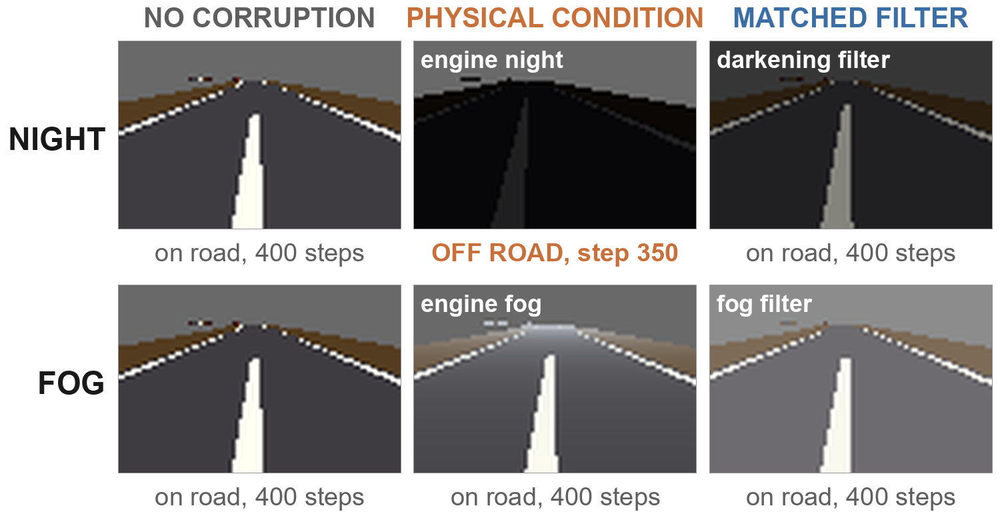

Darkening a photo is not the same as driving at night
This paper belongs to LANCER, my postdoctoral project at the University of Ljubljana on autonomous navigation in complex environments using reinforcement learning. Part of that work is testing: how do we know a camera-driven car will cope with night or fog?
The shortcut we questioned
The common shortcut is to take recorded footage and damage it with image filters, such as darkening it or adding a fog-like veil, then see how badly the vision network copes. It hides an assumption: that the filtered picture stands in for the physical condition it is named after. We tested it in a driving simulator that can produce night and fog in two ways. One filters the finished picture. The other changes the lights and the fog in the scene before it is rendered. We matched each filter to its physical condition by how much it changes the picture, and let nine independently trained agents drive in both.

What we found
Fog passed the test: the real fog and its filter agree at every strength. Night did not. At a picture change of 38 grey levels, the physical night cost the nine agents 0.51 of their driving performance, while the matched darkening filter cost nothing measurable. All nine agents agreed (sign test, p = 0.004). Training with filters did not help either: against physical conditions an agent trained that way did slightly worse (8.68 laps out of ten, against 9.05 without), while an agent that also saw re-rendered conditions completed every lap.
So whether a filter is a fair stand-in depends on the physics of the condition it imitates. These are simulator measurements, and our night has no headlights, which plausibly overstates what darkness does to a lit vehicle. The details, including a distance-based test we tried, are on the project page.
Sources
The figures and tables listed here are taken from the paper cited at the top of this page; the numbers quoted in the text come from it too.
- Figures: Fig. 3
Acknowledgements
This work was co-funded by the European Union's Horizon Europe research and innovation programme under the Marie Skłodowska-Curie COFUND Postdoctoral Programme, grant agreement No. 101081355 (SMASH), and by the Republic of Slovenia and the European Union from the European Regional Development Fund. It was also supported by the Slovenian Research and Innovation Agency (ARIS), research programme P2-0241, Synergetics of complex systems and processes. Views and opinions expressed are those of the authors only and do not necessarily reflect those of the European Union or the European Research Executive Agency. Neither the European Union nor the granting authority can be held responsible for them.
Cite the paper
Swarnendu Ghosh, Branko Šter (2026). Questioning Post-hoc Image Corruptions as a Proxy for Environmental Variation in Autonomous Driving. 29th International Multiconference Information Society (IS 2026), Vol. 1, pp. 60–63.
@inproceedings{ghosh2026posthoc,
author = {Ghosh, Swarnendu and {
S}ter, Branko},
title = {Questioning Post-hoc Image Corruptions as a Proxy for Environmental Variation in Autonomous Driving},
booktitle = {29th International Multiconference Information Society (IS 2026)},
volume = {1},
pages = {60--63},
address = {Ljubljana, Slovenia},
year = {2026},
doi = {10.70314/is.2026.skui.79}
}